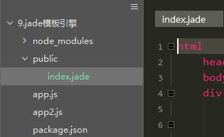
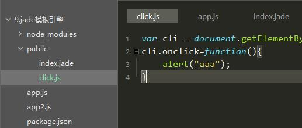

随着前端业务的不断发展，页面交互逻辑的不断提高，让数据和界面实现分离渐渐被提了出来。JavaScript的MVC思想也流行了起来，在这种背景下，基于node.js的模板引擎也随之出现。
它用于解析动态数据和静态页面所生成的视图文件，将原本静态的数据变为动态，快速地实现页面交互；
目前使用较广的模板引擎有以下几种：Jade / Pug、EJS、Handlebars。
jade模板引擎相较于原来的html会显得更加简洁，它将标签原本的"<>"符号去掉，用括号代替，层级使用tab缩进来分，并且也支持js语法；
安装jade：
cnpm install jade --save
在程序中引入jade：
app.set('views',"public"); //设置视图的对应目录
app.set("view engine","jade"); //设置默认的模板引擎
app.engine('jade', require('jade').__express); //定义模板引擎
特定路由渲染：
app.use("/",function(req,res){
res.render("index.jade");
});
完整实例：
const express=require("express");
const jade=require("jade");
const fs=require('fs');
var app=express();
//引用jade
app.set('views',"public"); //设置视图的对应目录
app.set("view engine","jade"); //设置默认的模板引擎
app.engine('jade', jade.__express); //定义模板引擎
//获取jade文件
var str=jade.renderFile("./public/index.jade",{pretty:true});
console.log(str);
app.use("/",function(req,res){
res.render("index.jade");
});
app.listen(8080);
由上面的app.set('views',"public");可知，这里将jade文件放在了public文件夹下：

在执行res.render时，会自动渲染public中的index.jade文件，之后转换为HTML5进行dom渲染显示。
html head style body div(class="content") h1 正文
了解过html语句的，从结构上一定会发现，它将原本的双标签省略了，尖括号也不见了，而层级的划分则由缩进实现，默认的，jade会把几乎所有缩进后的字母变为标签(行内元素)。以下代码会变为：
<html>
<head>
<style></style>
</head>
<body>
<div class="content">
<h1>正文</h1>
</div>
</body>
</html>
<div class="content"></div>也将用div(class="content")代表，简化了代码的书写；
有时我们想让我们的标签成为文字，那么“|”成为了绝好的工具：
div(class="content",id="content") | center
我们可以看到，他将center作为文字原封不动的写入了html中，而不是作为一个标签渲染。
当然我们用它来转换js语句：
script
| var cli = document.getElementById("content");
| cli.onclick=function(){
| alert("aaa");
| }
他将会变为：
<script>
var cli = document.getElementById("content");
cli.onclick=function(){
alert("aaa");
}
</script>
可以通过 script. 来识别js语法：
script.
var cli = document.getElementById("content");
cli.onclick=function(){
alert("aaa");
}
他也会变为：
<script>
var cli = document.getElementById("content");
cli.onclick=function(){
alert("aaa");
}
</script>
我们可以看到，相比于用 | 使用script. 更加方便快捷。
想在jade的js标签中引入其他js文件？没错，它也支持。前提请确保他们在同一文件夹下：

script include click.js
得到：
<script>var cli = document.getElementById("content");
cli.onclick=function(){
alert("aaa");
}
</script>
“-”允许我们直接写js语法，在变量调用时，通过 #{a+b} 或 div=a+b 进行：
html
head
body
-var a=10
-var b=20
div a+b为:#{a+b}
div=a+b
会得到：
<html>
<head></head>
<body>
<div>a+b为:30</div>
<div>30</div>
</body>
</html>
"-"也可以用于循环语句的使用
html
head
body
-var arr=0;
-for(var i=5;i>arr;i--)
div=i
div the number = #{i}
得到：
<html>
<head></head>
<body>
<div>5</div>
<div>4</div>
<div>3</div>
<div>2</div>
<div>1</div>
<div>the number = 0</div>
</body>
</html>
类似于switch case语句：
html
head
body
- var test = "汉子"
-var none = "无"
div The word is #{test}
case test
when "a": div the when is a
when "b": div the second is b
when "汉子": div the Third is 汉子
default: The words is #{none}
得到：
<html>
<head></head>
<body>
<div>The word is 汉子。</div>
<div>the Third is 汉子</div>
</body>
</html>
类似于switch case，只执行when中与case对应的代码块，在匹配后面用 : 来作为要执行的代码，后面跟上标签和对应语句
html
head
body
-for(var i=12;i>0;i--)
-if(i%2==0)
div(style={background:'#eee',width:'100%',height:'20px',color: '#333'}) 偶数
-else
div(style={background:'#333',width:'100%',height:'20px',color: '#eee'}) 奇数
得到：
<html>
<head></head>
<body>
<div style="background:#eee;width:100%;height:20px;color:#333"> 偶数</div>
<div style="background:#333;width:100%;height:20px;color:#eee"> 奇数</div>
<div style="background:#eee;width:100%;height:20px;color:#333"> 偶数</div>
<div style="background:#333;width:100%;height:20px;color:#eee"> 奇数</div>
<div style="background:#eee;width:100%;height:20px;color:#333"> 偶数</div>
<div style="background:#333;width:100%;height:20px;color:#eee"> 奇数</div>
<div style="background:#eee;width:100%;height:20px;color:#333"> 偶数</div>
<div style="background:#333;width:100%;height:20px;color:#eee"> 奇数</div>
<div style="background:#eee;width:100%;height:20px;color:#333"> 偶数</div>
<div style="background:#333;width:100%;height:20px;color:#eee"> 奇数</div>
<div style="background:#eee;width:100%;height:20px;color:#333"> 偶数</div>
<div style="background:#333;width:100%;height:20px;color:#eee"> 奇数</div>
</body>
</html>
在对style样式进行修改时，与script相同，也可使用 . 对其进行编辑，之后对不同的标签在其后面加{}，大括号里写css语句1，并使用 ; 隔开
html
head
meta(charset="utf-8")
title jade测试页面
style.
body{margin:0;padding:0}
div
{width: 100px;height: 100px;background: #ccc;text-align: center;line-height: 100px;margin: 10px auto}
div.last{clear:left}
body
-var a=0;
while a<12
if a%2==0 && a!=0
div.last=a++
else
div=a++
得到：
<html>
<head>
<meta charset="utf-8"/>
<title>jade测试页面</title>
<style>
body{margin:0;padding:0}
div
{width: 100px;height: 100px;background: #ccc;text-align: center;line-height: 100px;margin: 10px auto}
div.last{clear:left}
</style>
</head>
<body>
<div>0</div>
<div>1</div>
<div class="last">2</div>
<div>3</div>
<div class="last">4</div>
<div>5</div>
<div class="last">6</div>
<div>7</div>
<div class="last">8</div>
<div>9</div>
<div class="last">10</div>
<div>11</div>
</body>
</html>
Mixin的作用是对模块的复用，当重复代码有不同内容时，起作用就来了：
- var num = 0;
mixin node
div The number in mixin node is #{num++}
+node()
+node()
+node()
div At last, the number in mixin node is #{num++}
得到：
<div>The number in mixin node is 0</div> <div>The number in mixin node is 1</div> <div>The number in mixin node is 2</div> <div>At last, the number in mixin node is 3</div>
以上则是jade的一些常用语法，如果平常使用jade作为开发，那么这些是非常基础的，也希望大家有所体会